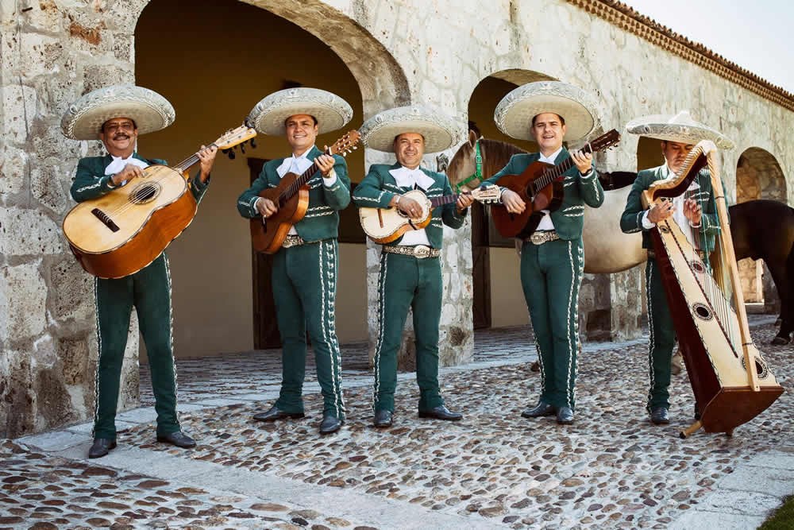
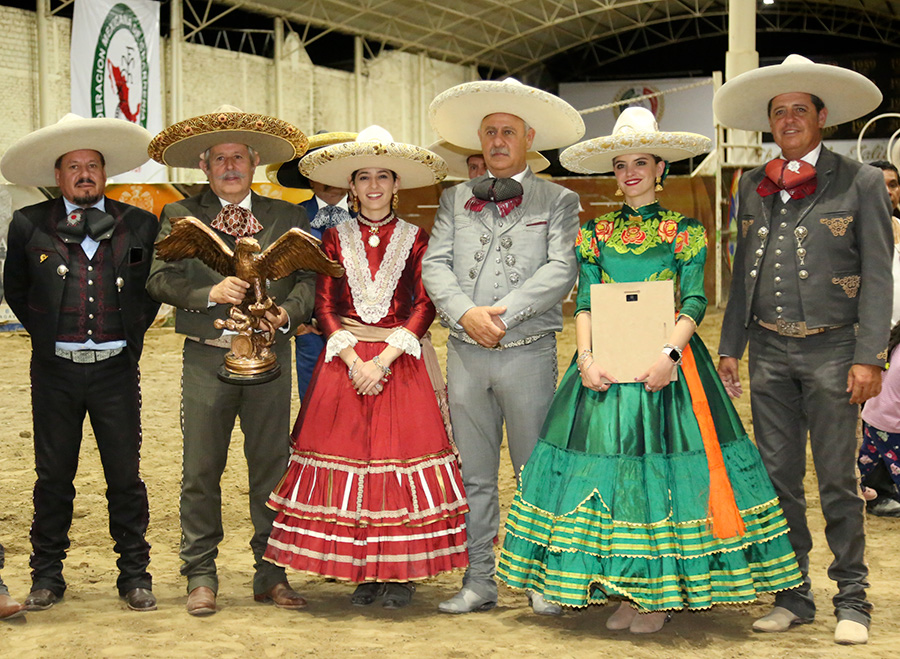
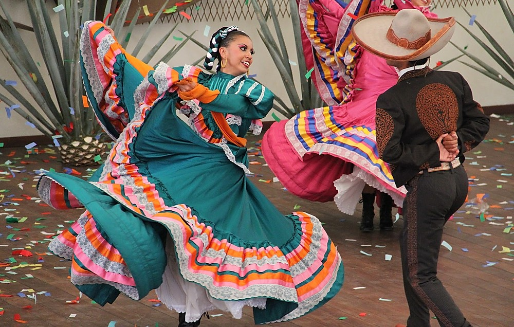
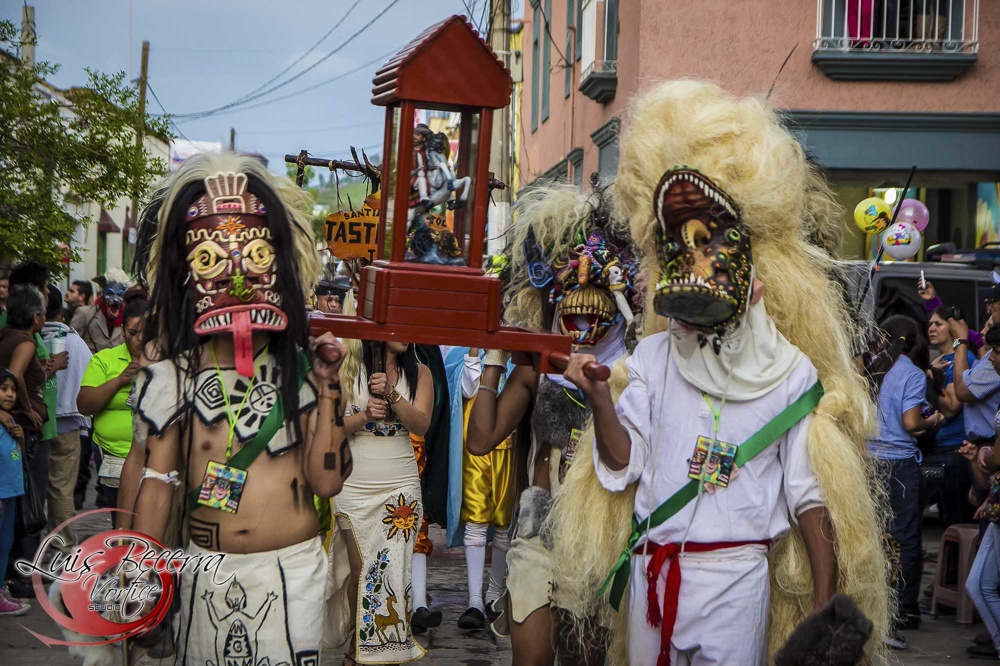

Tradiciones representativas
- 🎺 Mariachi: Música tradicional reconocida a nivel nacional e internacional.
- 🐴 Charrería: Actividad ecuestre que expresa disciplina y orgullo regional.
- 💃 Danza folklórica: Bailes con vestimenta colorida y música regional.
- 🎉 Fiestas patronales: Celebraciones religiosas y comunitarias.
Introducción
Jalisco es uno de los estados con mayor riqueza cultural de México. Muchas expresiones que hoy se
consideran parte de la imagen nacional tienen una presencia muy fuerte en esta región.
La música, la vestimenta, la danza, las fiestas, la gastronomía y las artesanías muestran una
identidad fuerte que sigue viva en plazas, escuelas, festivales y reuniones familiares.
Por esa razón, hablar de la cultura jalisciense es hablar de una mezcla de historia, costumbre y
sentido de pertenencia que se transmite de generación en generación.
Manifestaciones culturales
| Manifestación |
Descripción |
| Mariachi |
Expresión musical muy representativa de Jalisco y de México. |
| Traje de charro |
Vestimenta elegante asociada con la tradición ecuestre y el orgullo regional. |
| Danzas regionales |
Bailes con música y colores que reflejan alegría e identidad. |
📸 Cultura en imágenes
Grupo de mariachi

Charro representativo

| 🎉 Imágenes sugeridas para esta sección |
Danza folklórica

|
Fiesta patronal

|
🎊 Celebraciones importantes
Entre las celebraciones más importantes destacan los encuentros de mariachi, las fiestas
patronales de distintos municipios, el Día de Muertos y las ferias regionales.
Estas festividades permiten que la tradición siga viva y que nuevas generaciones conozcan las
costumbres del estado.
En muchas de estas celebraciones se combinan la música, la comida típica, la danza y las
actividades comunitarias, lo que fortalece la convivencia social.
🏠 Cultura en la vida diaria
La cultura de Jalisco no se limita a actos especiales. Está presente en la forma de hablar, en la
música que se escucha, en la comida que se comparte y en las actividades escolares y
comunitarias.
🎨 Valor cultural de Jalisco
La cultura jalisciense tiene un gran valor porque representa costumbres que han dado identidad a
todo México. Su importancia no solo se observa en el entretenimiento, sino también en la
educación, en el turismo y en la preservación del patrimonio.
Conocer estas expresiones permite entender mejor por qué Jalisco es considerado uno de los
estados más representativos del país.
🔝 Volver arriba
|